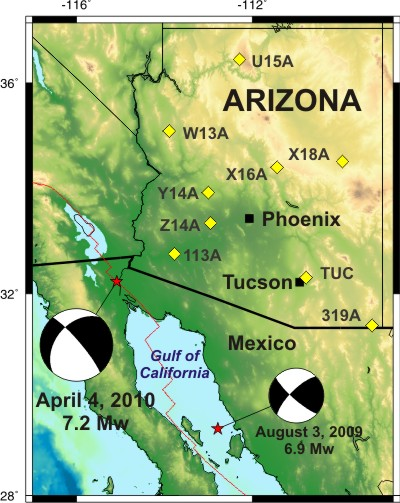
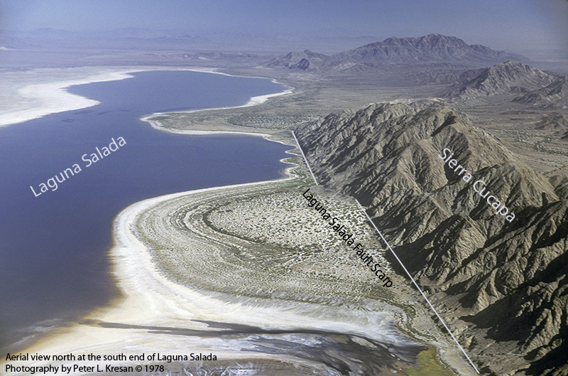
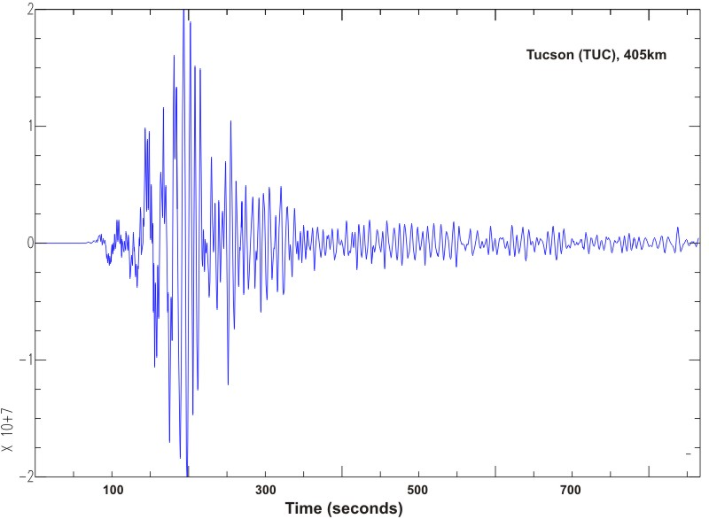
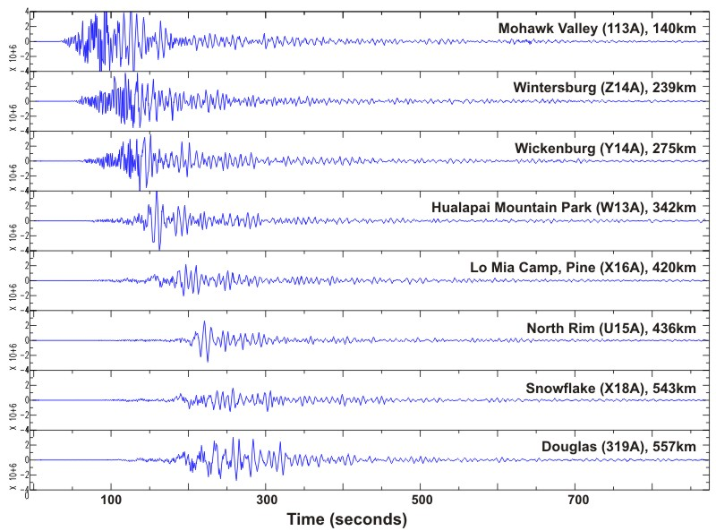
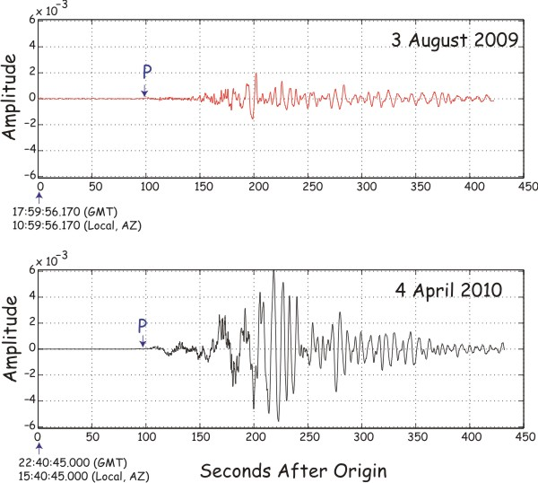

4 April 2010, Baja California Earthquake
On April 4, 2010 at 3:40 pm Tucson time a magnitude 7.2 earthquake occurred in Baja California, approximately 400 km west of Tucson. The event was felt with an intensity of II and III (Modified Mercalli Scale) in the Tucson and Phoenix areas. It took the initial P wave a little over one minute to travel from the source to Tucson. The main shock occurred along a strike slip segment of the North America-Pacific plate boundary that coincides with the southeastern part of the Laguna Salada fault. This is the largest earthquake in the vicinity of Tucson since the magnitude 6.9 Gulf of California on August 3, 2009.
The seismic station near Tucson (TUC) as well as the stations from Arizona Broadband Seismic Network recorded the event. The TUC station is part of the Global Seismic Network operated by IRIS and the USGS and it is also part of the Arizona Integrated Seismic Network that consists of 12 broadband seismic stations and 6 short period stations across the state. Eight of these stations were recently purchased by the Arizona Geological Survey as part of a collaborative project with the University of Arizona, Arizona State University, and Northern Arizona University and funded by FEMA.
Below is an aerial view looking north of the south end of the Laguna Salada Fault - the location of the 7.2 Mw April 4, 2010 earthquake (Photo credit: Peter L. Kresan)
Seismogram Station Tucson (TUC)
Seismograms Arizona Broadband Seismic Network
Station TUC Seismograms for the August 3, 2009 and April 4, 2010 earthquakes
